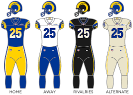

The Los Angeles Rams are a professional American football team based in the Greater Los Angeles area.
The Rams compete in the National Football League (NFL) as a member of the National Football Conference (NFC) West division. The team plays its home games at SoFi Stadium in Inglewood, California, which it shares with the Los Angeles Chargers. They are headquartered at the Rams Village at Warner Center in Los Angeles.
The Cleveland Rams were founded on April 11, 1936 by Ohio attorney Homer Marshman and player-coach Damon Wetzel, a former Ohio State star who played briefly for the Chicago Bears and Pittsburgh Pirates. Wetzel, who served as general manager, selected the "Rams", because his favorite college football team was the Fordham Rams from Fordham University; Marshman, the principal owner, also liked the name choice. The team was part of the newly formed American Football League and finished the 1936 regular season in second place with a 5-2-2 record, trailing only the 8-3 record of league champion Boston Shamrocks. The team featured players such as William "Bud" Cooper, Harry "The Horse" Mattos, Stan Pincura, and Mike Sebastian.
The Rams joined the National Football League on February 12, 1937, and were assigned to the Western Division. The Rams would be the fourth in a string of short-lived teams based in Cleveland, following the Cleveland Tigers, Cleveland Bulldogs, and Cleveland Indians. From the beginning, they were a team marked by frequent moves, playing in three stadiums over several losing seasons. However, the team featured the Most Valuable Player of the 1939 season, rookie halfback Parker Hall.
The Rams' heyday in Southern California was from 1949 to 1955, when they played in the pre-Super Bowl era NFL Championship Game four times, winning once in 1951. During this period, they had the best offense in the NFL, even though there was a quarterback change from Bob Waterfield to Norm Van Brocklin in 1951. The defining Offensive players of this period were wide receiver Elroy Hirsch, Van Brocklin and Waterfield. Teamed with fellow Hall of Famer Tom Fears, Hirsch helped create the style of Rams football as one of the first big play receivers. During the 1951 championship season, Hirsch posted a stunning 1,495 receiving yards with 17 touchdowns. In 1950 the popularity of this wide-open offense enabled the Los Angeles Rams to become the first pro football team to have all their games televised.
This is a longstanding rivalry that began in 1950, becoming particularly intense in the 1970s when both teams were in the NFC West and battled for division titles.
The rivalry intensified around 2002 when the Seahawks joined the NFC West, leading to two annual meetings.
